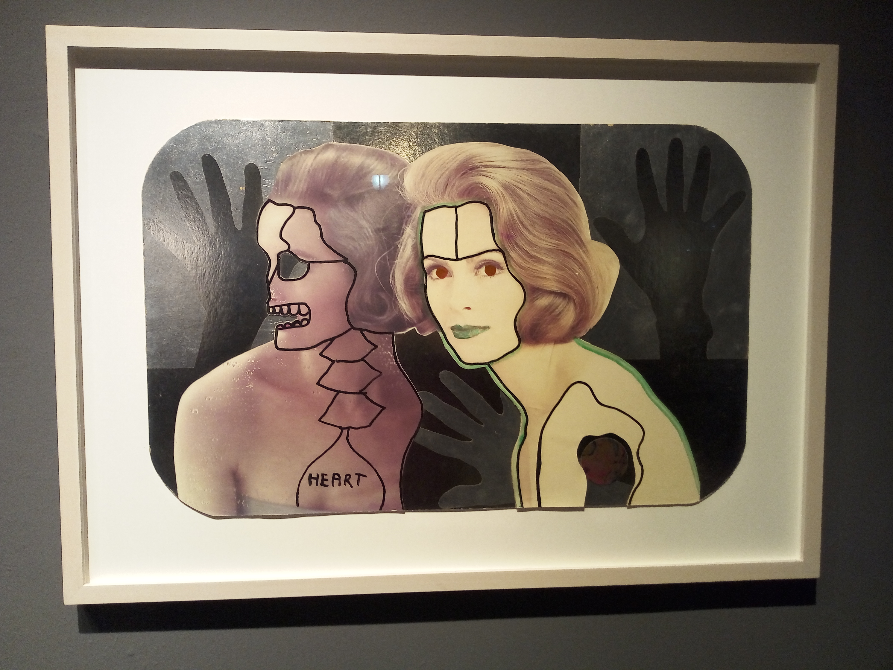
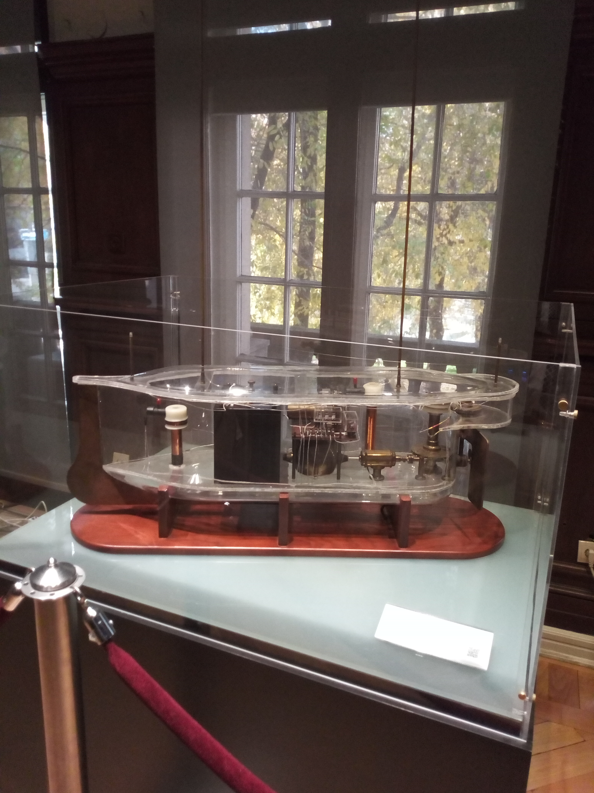
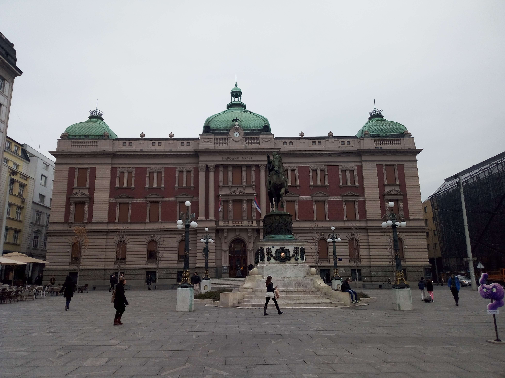

Belgrade, Serbia
Serbia
Set at the confluence of the Sava and Danube rivers, Belgrade is a city shaped by centuries of shifting empires, cultural encounters, and dramatic historical change. Its character emerges through the contrast between the historic streets of the old city, the imposing Belgrade Fortress overlooking the rivers, and the broad boulevards and modern districts of the capital. Museums and independent art spaces reveal different sides of Serbia’s cultural life, while cafés, lively public squares, and riverside promenades give the city its distinctive urban energy. Belgrade’s past and present exist side by side, making it a compelling place to explore the connections between history, society, and contemporary creativity. These photographs capture my personal impressions of the Serbian capital and the places that made my visit memorable.

Image to Image Art Space
An independent art space showcasing contemporary artistic expression and creative works in Belgrade.
Explore Photos ↗
Nikola Tesla Museum
Discover the life, inventions, and scientific legacy of one of the world's most remarkable inventors.
Explore Photos ↗
City Views
Explore photographs capturing Belgrade's skyline, historic architecture, rivers, and urban atmosphere.
Explore Photos ↗